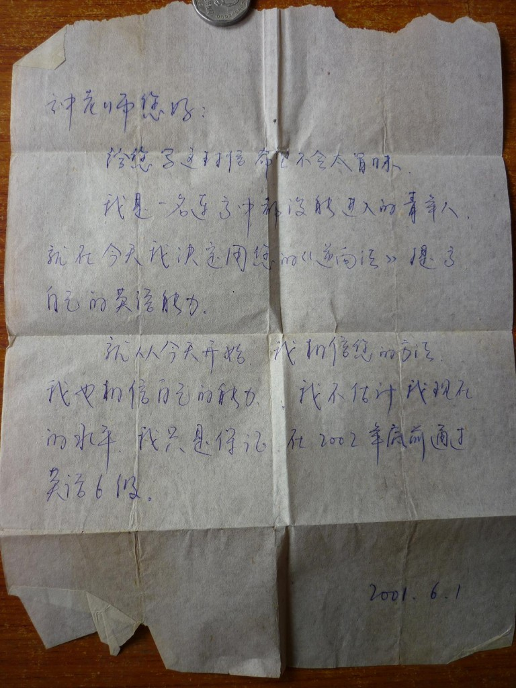

一张纸勾起的回忆
收拾之前的东西，不小心看到了一张纸条，是自己写给自己的。有点小感慨，记录下。
那时候刚开始工作吧，在沈阳的辽中县修桥，好像是从东北回家的路上，在北京的西单图书大厦泡了一天，买了这样一本书。当时看了，技巧倒没有得到什么，但是好像很受激励（年轻时更容易被激励吧），就下决心，真的下决心拿张破纸记下了目标，有点狂妄，当时不知道四级六级具体是啥，只知道六级比四级难，目标就写个大的。
说实话，读的那本书里面的内容已经完全不记得了，书好像也早都不在了。只是从那里面第一次听说了VOA Special English。后来就从一个还在念大学的好朋友的同学那儿拿到一个破收音机（同时还四块钱一本的从他们学校后门的旧书摊上买了四本大学英语的课本），居然收到那个台了，每天早上七点好像（那时候一直听，里面每周的bill white这些人的声音和风格都能分辨出来，到后来的standard english）现在已经时间都不记得了。唉。

一张纸
和其他一些年少时候自己写的日记一样，这些纸条，一直这样收拾着。但是当时却应该是起到作用了。没有上过高中，也没有上过大学，但是确实做到了在一年里过了四级又过了六级。记得六级报名的时候是在西电的大礼堂，大清早从南郊坐教育专线过去（那时候没有google地图，只知道好像在那趟公交站的附近），队伍弯弯曲曲的把礼堂前都占满了。好像是03年吧，或者是02年，那些证现在是在抽屉最下面了，懒得去再翻一下（现在怎么这么懒呢！）。如果是02年就按时完成目标，如果是03年就delay一年。回想起来了，后来读研究生的时候NWPU里规定过了六级可以免修英语，我的因为过得太早，被拒绝免修。唉，忘了当时的政策是几年之内可以免修了。得，也推算不出来。
本来只是想拿之前的一点小回忆激励现在懒惰的自己一把，激励没有达到，只是更衬托自己的懒惰了！
豆豆已经一岁了，妈妈有时候会给你讲爸爸原来多么厉害，没有上过大学，十几岁就去工地上班修桥。后来自己为了学习辞了工作在西安跑业务卖东西，一个人考那些自学考试，考了专科又考了本科，后来混到了软件公司里，工作了一年又去考研，线性代数，高数啥也不懂，从九月辞职到元月考试的四个半月里上了个辅导班加上自己上自习还被他四百零九考了个公费，比妈妈和她的同学正经大学毕业的还要高。可爱学习了，可爱工作了。妈妈就是爸爸的研究生同学。
在这几年忙忙碌碌混混沌沌的的过每一天的时候，这样偶尔翻起点东西，让自己还是小鼓舞一下。“哦，我还行！”，尤其是豆豆最近总是崇拜的把遥控器递到爸爸手里，让爸爸帮你做些你做不到，并且你认为妈妈也做不到的事情时。爸爸必须行！和我们豆豆一起加油，一起还要成长！
爸爸不喜欢豆豆过得和爸爸之前一样辛苦。但是爸爸必须再努力一点。爸爸喜欢并且享受努力的感觉，不喜欢懒散（妈妈推崇的悠哉）的感觉。同时回想起来之前总是愿意把目标写在小纸片里，后来发现居然都做到了，有些现在自己是不太敢相信的。爸爸希望自己可以有点像之前的自己，虽然妈妈说爸爸已经很努力了，在现在这个年龄，哈哈，听出来没，不是夸奖，是讽刺呀。呵呵，爸爸喜欢这样。照顾好豆豆和妈妈，花时间陪豆豆和妈妈，同时努力做事。爸爸应该更努力些。和之前一样敢想敢做！
doudou：baba baba，ni yao qu na li ya？
baba： fighting, fighting, whereever you want，with you an mum！
就写这些吧。